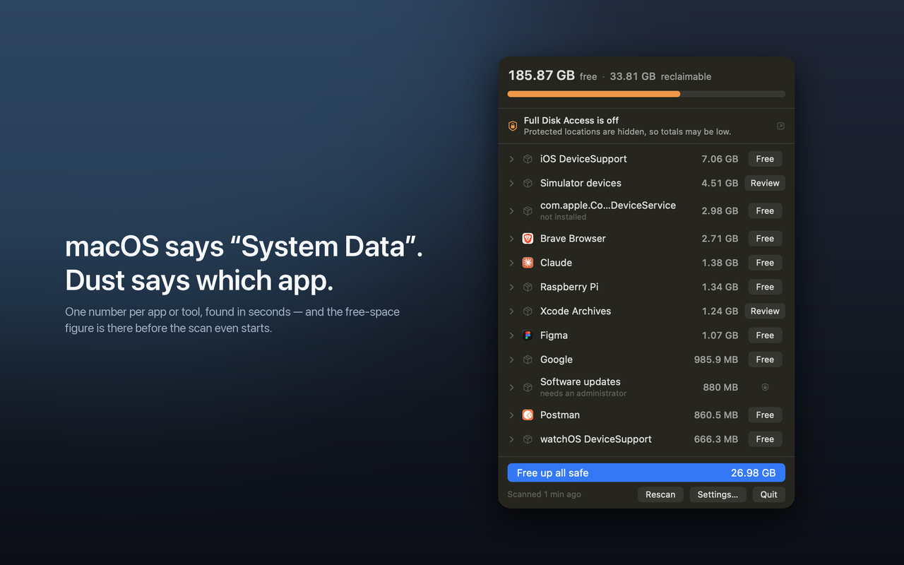

Reclaim the space macOS hides
macOS tells you that 235 GB is “System Data” and stops there. Dust tells you what it actually is — then frees what you choose.

What it finds
Every installed app
Caches, containers, HTTP storage and saved state, found through the locations macOS gives every app. No hardcoded list.
Browser engine caches
The Chromium and Electron sub-caches where editors, browsers and chat apps quietly keep gigabytes.
Xcode and simulators
DerivedData per project, device support per OS version, archives, and runtimes you have already superseded.
Package managers
SwiftPM, CocoaPods, Homebrew, npm, Yarn, pnpm, pip, uv, Gradle, Maven, Go, Cargo and more.
Your own build output
node_modules, build, Pods, .build — but only inside folders you add yourself.
Leftovers
Data belonging to apps that are no longer installed, the Trash, and downloads you have not touched in months.
What it will not do
Dust is built so that you can click Free without reading the fine print first.
- Scanning never writes. Nothing is removed until you ask.
- Your documents are not candidates. Documents, Desktop, Pictures, Movies, Music, iCloud Drive, Mail, Messages and iOS device backups are excluded while Dust is still looking — they cannot be selected by accident.
- Nothing is guessed. Caches are matched by exact folder name, never inferred from what a folder contains.
- Reversible things go to the Trash. Only regenerable caches are deleted outright, because trashing twenty gigabytes of cache just moves the problem.
- Nothing goes in bulk. Leftovers, old downloads and working simulators come through a review sheet with every box unticked.
- The number is real. “Freed 12.4 GB” is the volume measured before and after, not the sum of estimates. Anything that could not be removed is listed with the reason.
It stays out of the way
No background scanning, no timers, no filesystem watchers. A scan runs when you open the panel and stops when you close it. No network, no telemetry, no account — nothing leaves your Mac. See the privacy policy.
Requirements
macOS 14 Sonoma or later. Apple silicon and Intel.